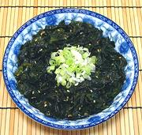

|
Seaweed SaladAmerican Sushi Bars - Seaweed Salad | ||||
| Makes: Effort: Sched: DoAhead: |
11-3/4 oz * 30 min Yes |
This salad is not actually Japanese - neither the Japanese nor Koreans use sesame oil in seaweed salad. It is served by American sushi bars, who buy Azumagourmet brand salad by the tub from Costco, and serve it at a "sushi bar price". | |||
| This recipe is adapted from one by Marc Matsumoto which strives for similar taste without thickeners, msg, preservatives, artificial colors and the like. Note: I have cut the pattern recipe's amount of sugar in half. | |||||
|
1 1 ------- 1/2 1 1-1/3 1 1/2 1/2 ------- 1 |
oz T --- t T T T T t --- |
Seaweed (1) Sesame seeds, toasted (2) -- Dressing Ginger Juice Soy Sauce Rice Vinegar Sesame Oil, dark Sugar Salt -- Garnish Scallion |
Make - (30 min - 15 min work)
|